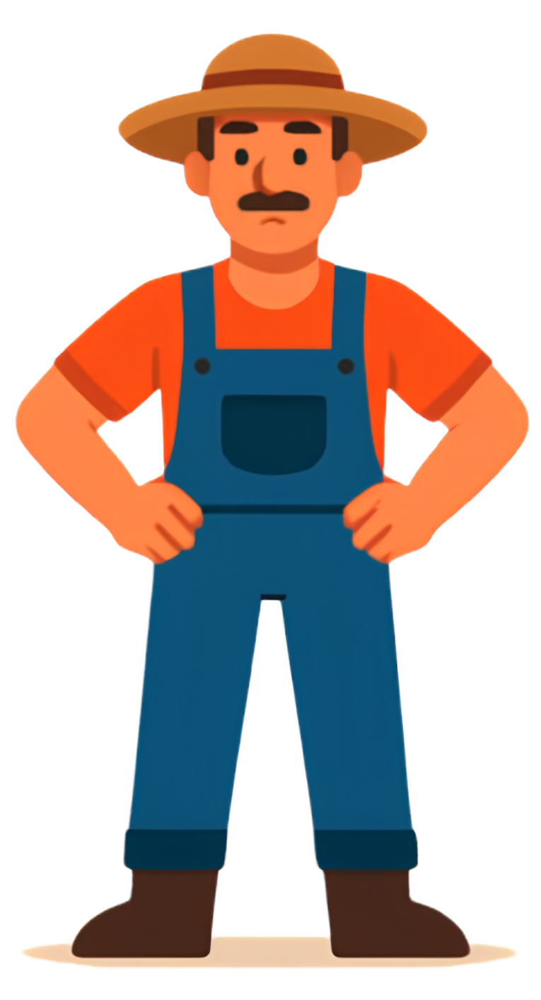

Monitoring real-time
Lihat data sensor dari perangkatmu.
WELCOME TO YOUR SMART GARDEN
Grow Smarter. Live Greener.
Pantau kondisi tanah, suhu, dan kelembapan secara real-time. Kelola penyiraman tanamanmu dengan lebih mudah dari satu dashboard.

Lihat data sensor dari perangkatmu.
Pilih mode otomatis atau manual.
Amati perubahan kondisi tanaman secara berkala.
Semua kondisi tanamanmu dalam satu ruang yang nyaman dan mudah dipahami.
Masuk untuk memantau tanaman dan penyiraman.
Belum punya akun?
Dengan melanjutkan, kamu menyetujui penggunaan layanan Smart Plant.
Tanamanmu tumbuh lebih baik saat kamu memahaminya.
Kelembapan tanah
Kelembapan udara
Suhu lingkungan
Perubahan suhu dan kelembapan dari waktu ke waktu.
Atur cara kerja pompa sesuai kebutuhan.
Mode otomatis
Pompa dikendalikan oleh logika sensor pada ESP32.